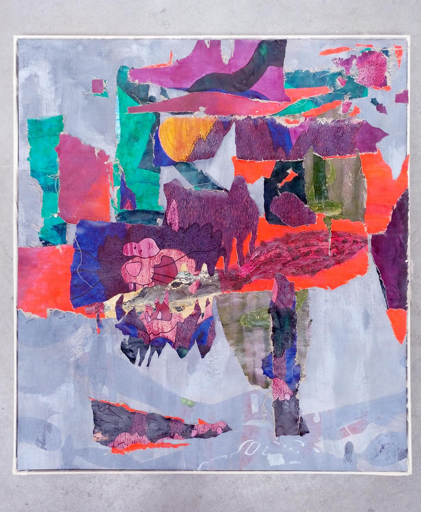

New skin for the old ceremony
an exhibition by Miky Kray
Miky Kray creates objects, mostly for the wall, out of pieces of his own discarded paintings. After being cut up or torn apart they are assembled onto simple materials like MDF, foam- and cardboard. Some of Kray's works recall the (de)collage techniques of Nouveau Réalisme. But instead of mass media, Kray keeps tapping from his genuine stock. The works have a high recognition factor as all of them share scraps from the same paintings. Having said that, those scraps are used in ways that invoke rather diverging references. Kray plays with the uniformity of an artistic oeuvre. The commitment to a singular material basis has to compensate for all kinds of collisions but fails to close the gap entirely.
'New skin for the old ceremony' shown at HECTOLITRE applies this notion on the scale of an exhibition reacting to the space. The works blend into its surroundings by chance, the multitude of shapes and colors can't help but reverberate with the space. Nevertheless, a feeling of divergence persists as both the works and the space lead too much a life of their own.
Brussels based Miky Kray studied at Academy of Fine Arts, Vienna, and was featured in several solo/duo and group shows in Austria and Belgium. Since 2021 he divides his time between Fine Arts and Indie Game Development. His forthcoming title 'Eon of the Green' is a text-based exploration game about Earth's post-human future.
Vernissage: Friday, Oct 14, 2022, 20h-22h
Open via appointment from Saturday Oct 15 to Friday Oct 21.
Contact and reservations: mikykray(at)gmail.com